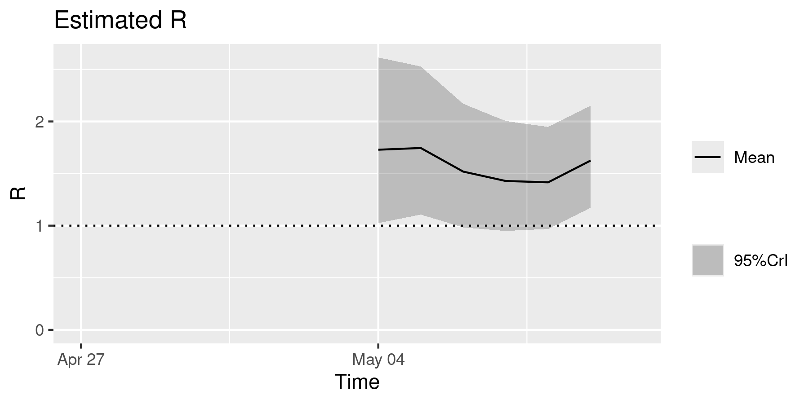

Generating and modelling R uncertainty
Source:vignettes/parameter_uncertainty.Rmd
parameter_uncertainty.RmdUncertainty in the characteristics of an epidemic is a key element and roadblock in epidemic response (Shea et al. 2020). This vignette aims to show how to model parameter uncertainty using epidemics, as well as how it might affect conclusions regarding the implementation of response measures such as non-pharmaceutical interventions.
New to epidemics? It may help to read the “Get started” vignette first!
Code
Prepare \(R\) estimates
For this example, we consider influenza with pandemic potential (Ghani et al. 2010), and prepare multiple samples of the estimated \(R\).
We obtain the probability distribution function (PDF) from the distribution of the serial intervals; this is a Gamma distribution with shape \(k\) = 2.622 and scale \(\theta\) = 0.957 (Ghani et al. 2010).
The forthcoming Epiverse package epiparameter is expected to make it substantially easier to access and use epidemiological parameters, such as the serial interval, reported in the literature, making it easier to model scenarios differing in the intrinsic characteristics of the pathogen causing the outbreak.
We use this PDF to estimate the \(R\) of the 2009 influenza pandemic in the U.K., using the EpiEstim package. We use the \(R\) estimate (the mean and standard deviation) from EpiEstim to generate 100 samples of \(R\), assuming that it is normally distributed.
Code
# Get 2009 influenza data for school in Pennsylvania
data(Flu2009)
flu_early_data <- filter(Flu2009$incidence, dates < "2009-05-10")
# get the PDF of the distribution of serial intervals
serial_pdf <- dgamma(seq(0, 25), shape = 2.622, scale = 0.957)
serial_pdf <- serial_pdf / sum(serial_pdf) # check sum to 1
# Use EpiEstim to estimate R with uncertainty
# Uses Gamma distribution by default
output_R <- estimate_R(
incid = flu_early_data,
method = "non_parametric_si",
config = make_config(list(si_distr = serial_pdf))
)
# Plot output to visualise
plot(output_R, "R")
Generate 100 samples of \(R\).
Prepare epidemic model inputs
We define inputs for the default, SEIR-V model in epidemics in the form of a <population> object.
We omit non-pharmaceutical interventions and vaccinations for this example.
Since this step is identical to that in previous vignettes, the code is folded, but can be expanded for clarity.
Code
# load contact and population data from socialmixr::polymod
polymod <- socialmixr::polymod
contact_data <- socialmixr::contact_matrix(
polymod,
countries = "United Kingdom",
age.limits = c(0, 20, 40),
symmetric = TRUE
)
# prepare contact matrix
contact_matrix <- t(contact_data$matrix)
# prepare the demography vector
demography_vector <- contact_data$demography$population
names(demography_vector) <- rownames(contact_matrix)
# initial conditions: one in every 1 million is infected
initial_i <- 1e-6
initial_conditions <- c(
S = 1 - initial_i, E = 0, I = initial_i, R = 0, V = 0
)
# build for all age groups
initial_conditions <- rbind(
initial_conditions,
initial_conditions,
initial_conditions
)
rownames(initial_conditions) <- rownames(contact_matrix)
# prepare the population to model as affected by the epidemic
uk_population <- population(
name = "UK",
contact_matrix = contact_matrix,
demography_vector = demography_vector,
initial_conditions = initial_conditions
)
# an intervention to close schools
close_schools <- intervention(
type = "contacts",
time_begin = 200,
time_end = 260,
reduction = matrix(c(0.5, 0.01, 0.01))
)Run with \(R\) uncertainty
Loop over sampled \(R\) values to generate epidemic model outputs with uncertainty.
Code
# define the infectious period
infectious_period <- 7
# iterate over the R samples, running the epidemic model for each value of R
output_samples <- Map(
r_samples,
seq_along(r_samples),
f = function(x, i) {
# run an epidemic model using `epidemic()`
output <- model_default_cpp(
population = uk_population,
transmissibility = x / infectious_period,
recovery_rate = 1 / infectious_period,
intervention = list(contacts = close_schools),
time_end = 600, increment = 1.0
)
# calculate new infections
output <- new_infections(output)
# assign scenario number
output[, c("scenario", "R") := list(i, x)]
output
}
)We view the output of a few scenario runs.
Code
# View the firt few rows of the first two runs
lapply(output_samples[1:2], head)
#> [[1]]
#> time demography_group new_infections scenario R
#> 1: 0 40+ 0.000000 1 1.47341
#> 2: 0 [0,20) 0.000000 1 1.47341
#> 3: 0 [20,40) 0.000000 1 1.47341
#> 4: 1 40+ 4.488961 1 1.47341
#> 5: 1 [0,20) 3.516643 1 1.47341
#> 6: 1 [20,40) 3.414592 1 1.47341
#>
#> [[2]]
#> time demography_group new_infections scenario R
#> 1: 0 40+ 0.000000 2 1.812195
#> 2: 0 [0,20) 0.000000 2 1.812195
#> 3: 0 [20,40) 0.000000 2 1.812195
#> 4: 1 40+ 5.538607 2 1.812195
#> 5: 1 [0,20) 4.341045 2 1.812195
#> 6: 1 [20,40) 4.213767 2 1.812195
# combine to prepare for plotting
output_samples <- bind_rows(output_samples)We obtain the epidemic runs and plot the number of new infections in each scenario; the plotting code is folded for brevity.
Code
ggplot(output_samples) +
geom_vline(
xintercept = c(200, 260),
colour = alpha("black", 0.5),
linetype = "dashed"
) +
annotate(
geom = "text",
x = 230, y = 600e3,
label = "Schools closed",
colour = alpha("black", 0.5),
angle = 90,
hjust = "inward"
) +
geom_line(
aes(
time, new_infections,
group = scenario,
colour = R
),
alpha = 0.3
) +
scale_colour_fermenter(
palette = "Dark2",
breaks = c(0, 1, 1.5, 2.0, 3.0),
limits = c(0, 3)
) +
scale_y_continuous(
name = "New infections",
labels = scales::label_comma(scale = 1e-3, suffix = "K")
) +
labs(
x = "Time (days since start of epidemic)"
) +
facet_grid(
cols = vars(demography_group)
) +
theme_bw() +
theme(
legend.position = "top",
legend.key.height = unit(2, "mm")
)![Modelling scenarios of the spread of influenza with pandemic potential in the U.K., with uncertainty in the reproduction number $R$. Each scenario represents one of 1,000 runs with different values of $R$ estimated from the case data for the 2009 influenza pandemic in the U.K. Scenarios are coloured by $R$, which is divided into four bins for visual clarity. Values of $R <$ 1.0 do not lead to large epidemics. The duration of a non-pharmaceutical intervention to close schools for two months (affecting the social contacts of all individuals under age 20) is also shown. For example, in high $R$ scenarios (green), school closures have little effect, as the epidemic has peaked before the intervention can take effect; this demonstrates how uncertainty in epidemic characterists may influence the effectiveness of response measures.](parameter_uncertainty_files/figure-html/unnamed-chunk-8-1.png)
Figure 1: Modelling scenarios of the spread of influenza with pandemic potential in the U.K., with uncertainty in the reproduction number \(R\). Each scenario represents one of 1,000 runs with different values of \(R\) estimated from the case data for the 2009 influenza pandemic in the U.K. Scenarios are coloured by \(R\), which is divided into four bins for visual clarity. Values of \(R <\) 1.0 do not lead to large epidemics. The duration of a non-pharmaceutical intervention to close schools for two months (affecting the social contacts of all individuals under age 20) is also shown. For example, in high \(R\) scenarios (green), school closures have little effect, as the epidemic has peaked before the intervention can take effect; this demonstrates how uncertainty in epidemic characterists may influence the effectiveness of response measures.
The forthcoming Epiverse package scenarios is expected to include functionality that wraps the iteration step shown in this vignette, to make it easier to model parameter uncertainty.